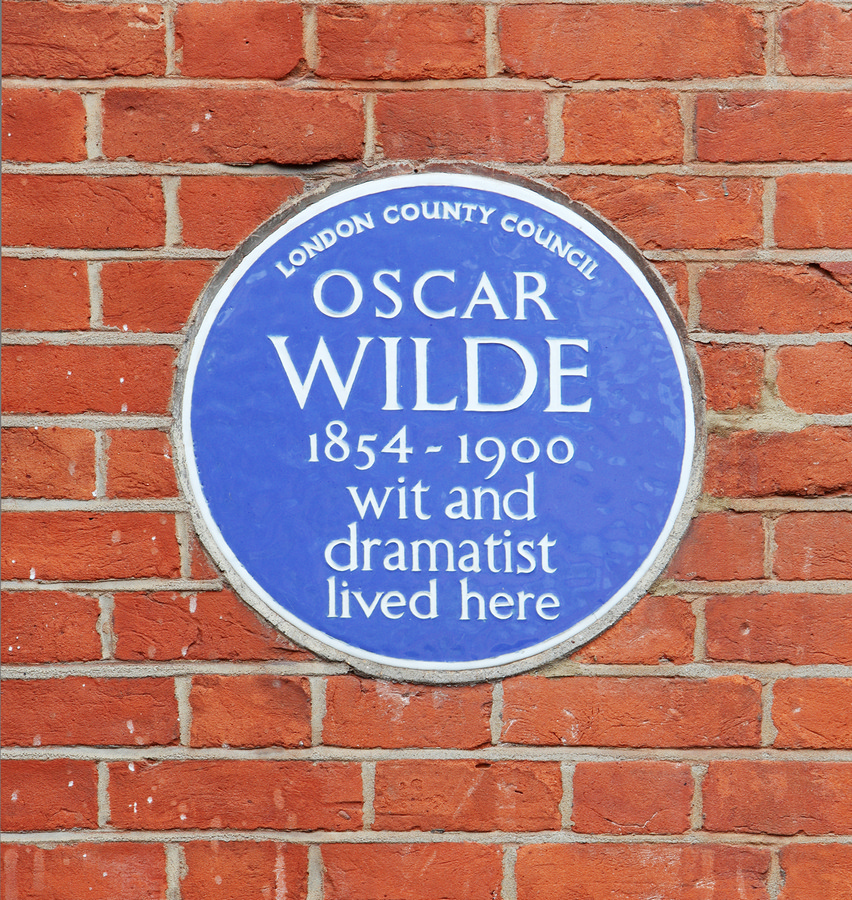
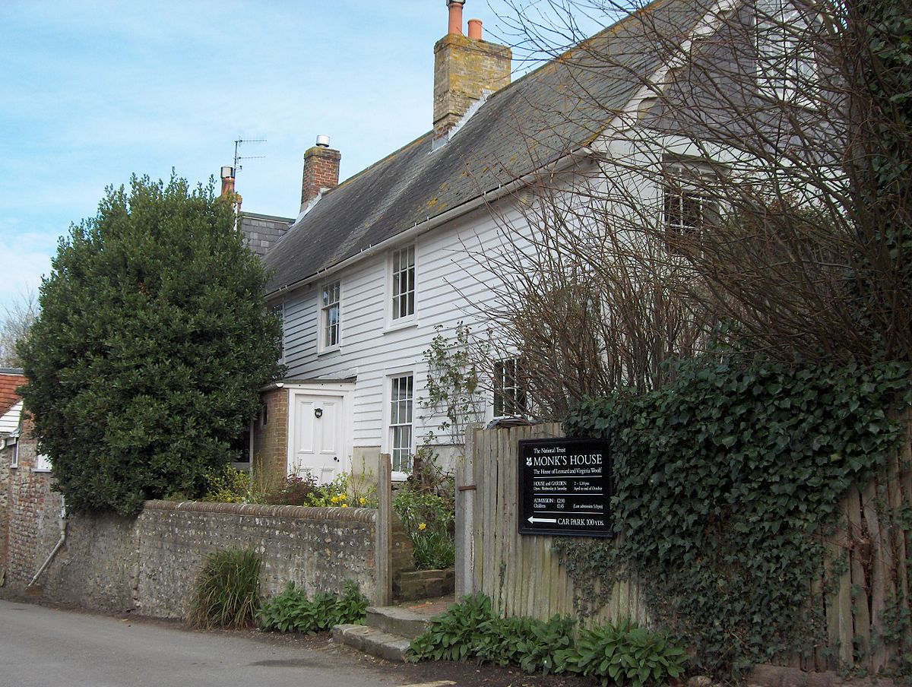
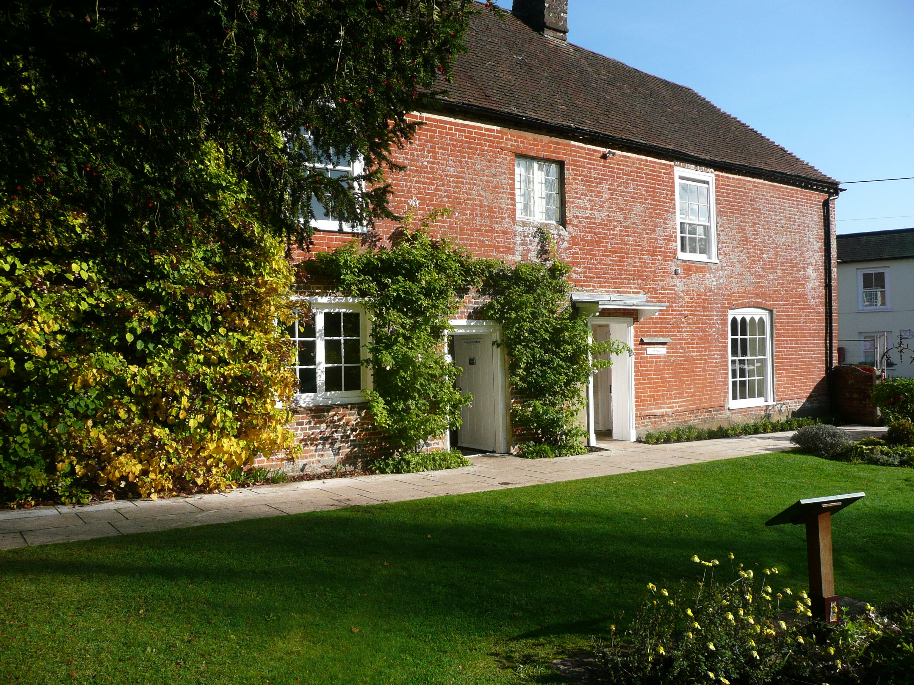
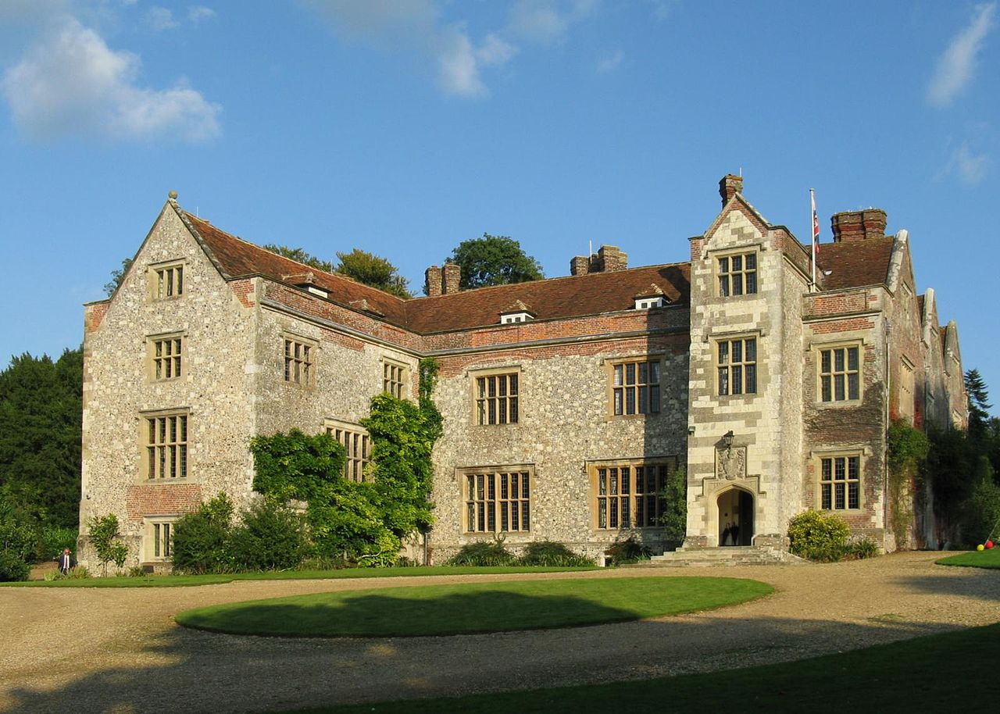
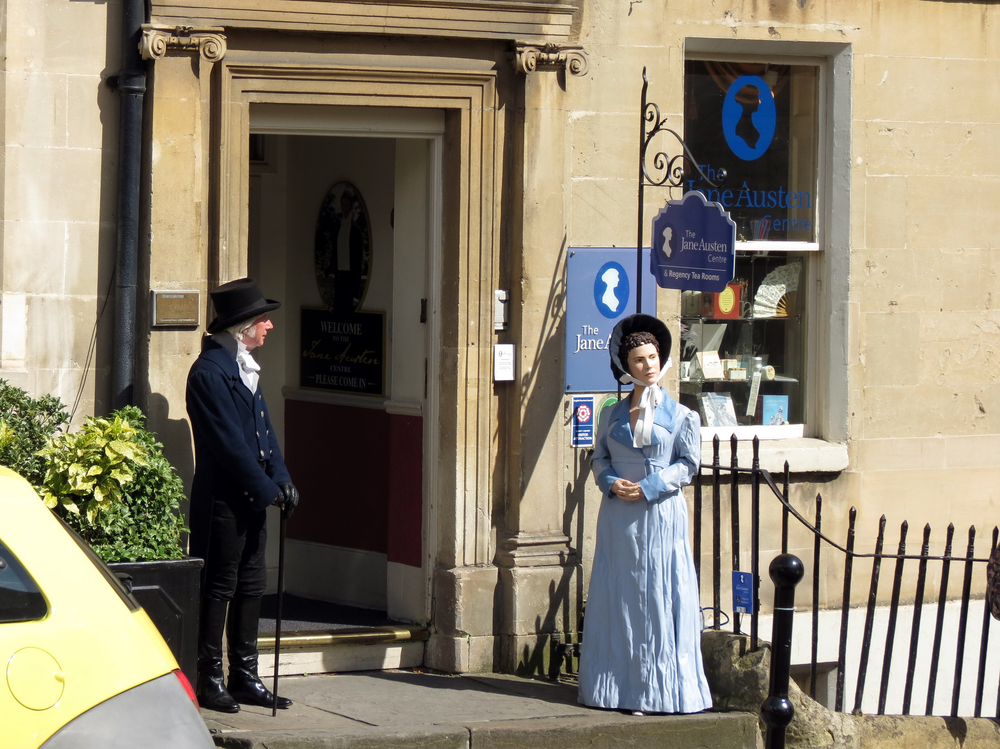
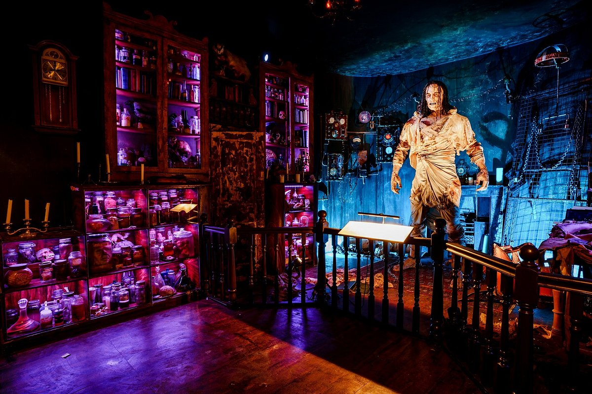
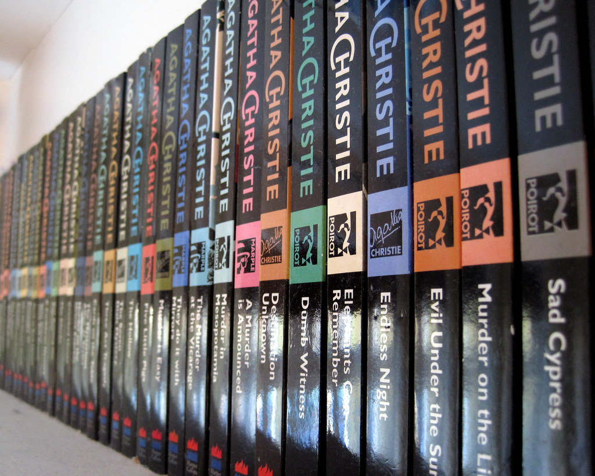
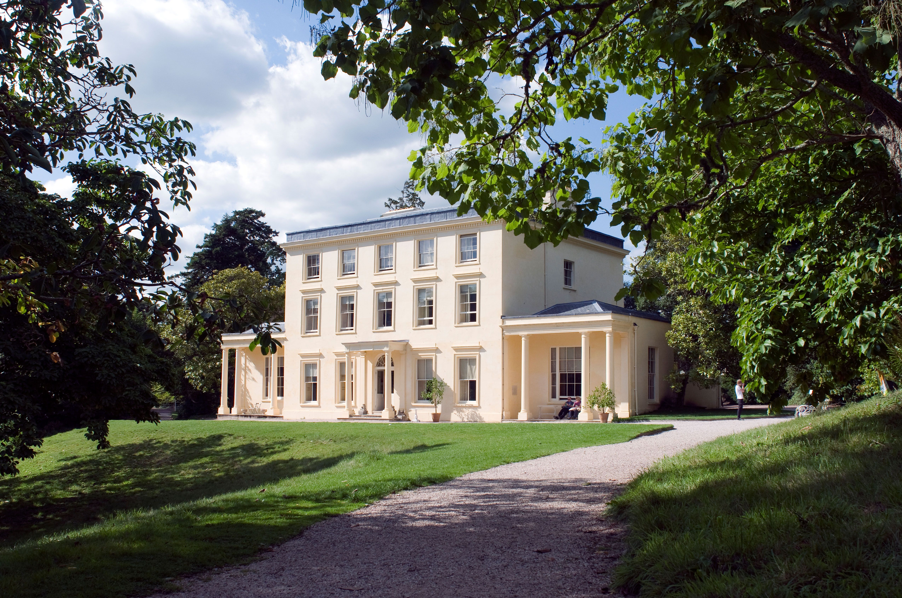
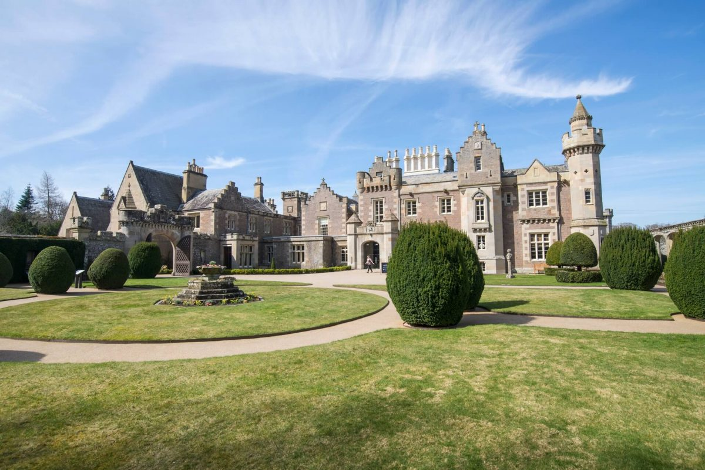
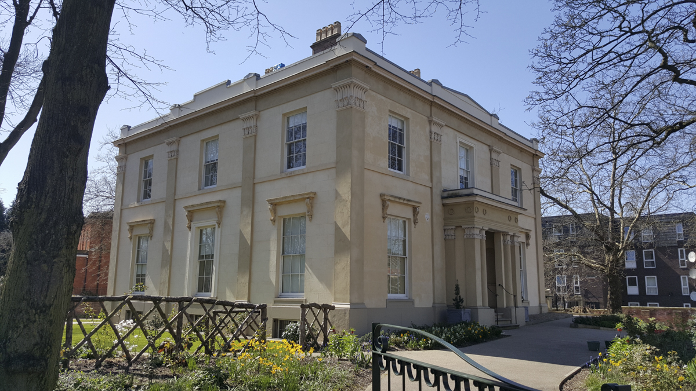

<!DOCTYPE html>
<html lang="ru">
<head>
  <title>Интерактивная карта</title>

  <meta charset="UTF-8">
  <meta name="viewport" content="width=device-width, initial-scale=1.0">
  <meta http-equiv="X-UA-Compatible" content="ie=edge">
  <meta name="description" content=" ">
  <meta name="keywords" content=" ">
  <link rel="stylesheet" href="css/main.css">
  <link rel="stylesheet" href="css/media.css">
  <link rel="stylesheet" href="css/fonts.css">
</head>

<body>
  <div class="map">
       <svg viewbox="0 0 1920 1080">
         <a href="#">
        <path class="part" d="m 1160,738.7069 c -2.3208,3.8366 -1.8181,6.56745 -0.5172,9.05172 3.3344,2.86286 6.0299,3.2172 8.4482,2.4138 5.1018,-2.2462 4.4911,-6.07346 4.4828,-6.29311 0.5166,-2.91608 -1.5038,-5.6381 -4.4828,-7.06896 -0.9555,-0.19528 -3.8081,-1.53987 -7.931,1.89655 z" description-data="A blue plaque is a plaque installed in places associated with famous figures or events in the UK. One of these figures is Oscar Wilde - a plaque dedicated to him is located in Chelsea, London. In this house Wilde reached the ppeak of his career. He wrote Portrait of Dorian Gray, How imortant it is to be serious and other works of his there.
          ">
        </a>

        <a href="#">
       <path class="part" d="m 1166.3793,792.32759 c -0.5369,1.99066 -1.4699,3.6348 -0.2586,7.15517 1.3506,1.92636 2.7011,2.53131 4.0517,3.36207 4.0925,0.98206 4.4704,-0.39974 6.2931,-0.86207 2.0158,-1.52462 2.7702,-3.7701 3.1897,-6.2069 -0.3273,-1.83908 -1.3971,-3.67816 -3.1035,-5.51724 -2.0191,-1.14602 -4.1305,-1.55349 -6.3793,-0.86207 -1.5041,0.79201 -2.7603,1.48214 -3.7931,2.93104 z" description-data="      To isolate themselves from the hustle and bustle of London, Virginia and Leonard Wolf bought a house in 1919. Back then, according to Virginia, there was no water, no gas, no electricity, and the site itself was very modest, with a small orchard and small buildings. Over 50 years of living there, the couple changed the house so that they could live comfortably. 
        Virginia drowned herself in March 1941 in a river near her home. Leonard lived the last 28 years of his life there, actively participating in the life of the village.">
       </a>

       <a href="#">
      <path class="part" d="m 1120.2586,751.03448 c -1.0774,2.88269 -1.5226,5.70792 -0.086,8.36207 1.8721,1.42396 3.7165,2.93096 6.0345,3.01724 1.8877,-0.53719 3.9667,0.0157 5.431,-2.84482 0.6928,-1.67222 2.166,-0.63489 1.3793,-5.77586 -0.1991,-1.55173 -1.3238,-3.10345 -3.362,-4.65518 -2.1834,-1.48993 -4.1637,-1.1512 -6.1207,-0.60345 -1.8447,0.6828 -2.5516,1.59317 -3.2761,2.5 z" description-data="      Jane Austen House is a museum where Jane spent the last eight years of her life. She lived there with her mother, sister Cassandra and family friend Martha Lloyd. During the time she spent in the cottage, she wrote Emma, Persuasion and Mansfield Park.
        The building was originally built as a farmhouse, and was later used as an inn. In 1769, the house was bought by Austen's distant relatives, the Knight family, who made the house part of the estate in Chawton. Later they named Edward, Jane's older brother, as heir. In 1809, Edward invited his mother and sisters to move to a small house in Chawton. Jane Austen died on July 18, 1817 in Winchester, where she had been receiving medical treatment for the last 2 months. Mrs. Austen and Cassandra continued to live there until their death. In 1845, after Cassandra's death, the house was returned to the estate in Chawton and divided into three dwellings for the staff of the estate, and served as an office and a club for workers.
        Carpenter established the Jane Austen Memorial Foundation to establish the museum. On July 23, 1949, the Jane Austen Museum was opened. Initially, most of the house was occupied by renters, only one room was open to the public. Later, with the departure of the renters, other rooms became available to visitors.">
      </a>

      <a href="#">
     <path class="part" d="m 1111.1207,768.53448 c -4.2079,1.09029 -6.1023,3.48194 -6.6379,6.63794 0.3086,3.2196 1.3878,5.57226 3.5344,6.72413 4.9246,1.76365 6.6674,0.3456 8.7069,-0.77586 1.7605,-1.89655 2.0626,-3.7931 2.2414,-5.68965 -0.022,-2.22343 -0.9957,-3.68619 -2.1552,-5 -1.3717,-1.41944 -3.4026,-1.85013 -5.6896,-1.89656 z" description-data="      In the 1580s, the estate was built by the Knight family. The estate was passed from to person, and therefore changed a lot.
      Edward, who inherited the estate from distant relatives, offered Jane, Cassandra and their mother modest housing nearby.   
    The estate also has something to offer to lovers of birds of prey. On the website, you can book a walk around the estate with hawks.">
     </a>

     <a href="#">
    <path class="part" d="m 1053.7931,766.2069 c 0.9809,5.41538 3.3685,5.20412 5.431,6.2931 2.5889,0.20652 5.0925,0.24231 6.5518,-1.81034 2.4189,-2.39758 2.0816,-4.24391 2.3276,-6.2069 -0.4133,-3.00188 -2.3124,-3.92361 -3.7932,-5.43103 -3.508,-1.20912 -5.0808,-0.48312 -6.8103,0.0862 -2.7584,2.1838 -2.4651,2.53657 -3.1034,3.44828 -0.7672,2.05601 -0.7437,2.92578 -0.6035,3.62069 z" description-data="      It is located in Bath on the same street where the writer lived. The room is full of decorations, and the workers are dressed in clothes of that time. The Center hosts themed festivals. 
      Regency Tea Room
             Visitors will be able to enjoy tea, cake and a lunch on the top floor. The center was even given an Award of Excellence, visitors can safely expect the best quality tea in a cozy interior with a pleasant staff.
            Those who wish will be able to celebrate the writers birthday together with the Center and walk around the city accompanied by their own Mr. Knightley. At the end of the walk, wine and cake are waiting for the participants. In addition, the price includes prints, exclusive collections and so on.">
    </a>

    <a href="#">
   <path class="part" d="m 1043.0172,758.36207 c 5.6584,1.53151 5.8511,4.55368 6.638,7.41379 -0.5493,2.23806 -0.9638,4.61101 -2.8449,5.51725 -1.2277,1.0228 -3.0264,1.33193 -5.1724,1.20689 -1.954,-0.53693 -3.908,-1.15903 -5.862,-4.39655 0.235,-2.15768 -1.4733,-1.81683 1.6379,-7.67241 1.8678,-1.51211 3.7356,-2.16589 5.6034,-2.06897 z" description-data="       The atmosphere of the museum reflects Mary's tragic fate. It is full of intimidating scenery and vintage items that will help visitors experience everything that Frankenstein felt. Dark tones, gloomy atmosphere, musical and visual effects - all this makes a unique impression on the visitor.
    The escape room. 
          The escape room is a quest. To fulfill his crazy plan Victor Frankenstein lacks only a few key components. Seems like visitors’ vital organs can help him find it. In order to stay alive they will have to solve the equation and escape from Frankenstein's attic.
    ">
   </a>

   <a href="#">
  <path class="part" d="m 991.03448,818.79311 c -1.68365,0.8647 -3.35217,1.54784 -5.25862,5.0862 0.004,2.17575 -0.11441,4.31052 1.89656,7.15517 2.01149,1.1961 4.02299,2.40775 6.03448,1.81035 2.44705,-0.53087 4.15356,-2.3577 5.68965,-4.48276 1.52315,-2.61502 0.29854,-4.0088 -0.0862,-5.77586 -1.2151,-1.57637 -2.42284,-3.16501 -4.31035,-3.62069 -2.40091,-0.67408 -3.12252,-0.38856 -3.96552,-0.17241 z" description-data="      This gallery is dedicated to novels, plays and the life of Agatha Christie in general. 
    Visitors can enter the living room, which houses furniture, paintings, books and even fireplaces from her London Art Deco apartment. 
     The Museum also received furniture as a donation 
from the filming of Poirot, a TV series based on a series of detective novels about Detective Poirot. David Suchet, the actor who played Poirot, temporarily provided a cane with which he walked in the role of Poirot.">
  </a>

  <a href="#">
 <path class="part" d="m 991.12069,835.43104 c -2.0977,0.24164 -4.1954,-0.006 -6.2931,2.41379 -1.145,2.23607 -2.61441,4.43971 -1.55173,6.89655 1.29618,2.33786 2.78709,3.50737 4.31035,4.48276 0.72476,0.0623 5.83886,3.15329 8.10345,-2.06897 0.89738,-1.72199 1.6986,-3.55938 1.46551,-6.63793 -1.22183,-2.5728 -2.76679,-4.78657 -6.03448,-5.0862 z" description-data="      Greenway was first mentioned in 1943 as the crossing point of the Dart River with Dittisham. At the end of the 16th century, Otto and Catherine Gilbert built a mansion called Greenway Court. In 1700, the Gilberts sold the Greenway to Thomas Martin, making nearby Compton Castle their residence. After a chain of handovers of the estate, it finally came into the posession of Rupa Harris. He built a Georgian-style house, and in 1791 sold it to Edward Elton. In 1800, Rupe went bankrupt, probably because of the funds spent on the restoration of the Greenway. 
  Agatha Christie and her husband Max Mallowan left their home in Torquay, because new buildings blocked the view of the sea. Christie noticed Greenway from her youth, considering it the perfect possession on the Dart. Noticing that it was free, she hurried to go there. 
  The couple lived there until their death (Christie in 1976, Mallowan in 1978). Christie made references to the estate in several of her works.">
 </a>

 <a href="#">
<path class="part" d="m 1035.6897,375.94828 c 1.8678,-1.1985 3.7356,-1.20882 5.6034,-1.29311 3.0967,0.88338 4.7149,2.65379 5.5172,4.9138 0.8775,2.33973 0.6714,4.49887 -1.2068,6.37931 -2.0506,3.02981 -3.1474,2.24483 -4.569,2.75862 -2.4248,0.56298 -4.7012,-0.65473 -6.8966,-2.84483 -2.2251,-3.70566 -0.9526,-5.07955 -0.6034,-7.06897 0.1407,0.0489 -0.5587,-0.18362 2.1552,-2.84482 z" description-data="      In 1814 Scott bought a farmhouse on a mountain. He increased the size of his possessions by buying lands from neighbours, after which he expanded the house itself, turning it into a castle. He couldn't wait to make his living place a paradise. He added an office, dining room, armory, garden, living room and library. The original farmhouse was demolished for the lobby. Walter consulted with artists and architects for the layout of the garden. 
  After Scott's death, his descendants continued to make changes. Thats how a chapel and a wing appeared on the territory.">
</a>

<a href="#">
<path class="part" d="m 1051.2069,548.62069 c 1.7903,-2.25544 3.9619,-2.60449 6.2069,-2.58621 2.9354,-0.44148 6.7358,3.07058 6.4655,6.37931 -0.1623,1.98705 -2.0189,6.70316 -2.6724,6.46552 -2.7273,1.75533 -5.6679,0.95069 -8.6207,0 -1.7517,-1.75376 -2.9263,-3.94033 -2.8448,-7.06896 z" description-data="      The Bronte Sisters Museum is a museum maintained by the Bronte Sisters Society dedicated to three great writers - Charlotte, Emily and Ann Bronte. The writers spent most of their lives here. 
  The dining room is the place where Jane Eyre, Wuthering Heights, Agnes Grey were written. The sisters got into the habit of gathering around the table and discussing their ideas and projects before going to bed. The death of the sisters did not stop Charlotte from walking around the room - she could not fall asleep without this ritual. 
  There is no more suitable place for a maid's chilling stories than the kitchen fireplace – it was where the sisters entertained themselves as children with stories about the Yorkshire moors. 
After the death of Elizabeth Branwell, the sisters' aunt, Emily took care of the house. She helped in the kitchen, baked bread. 
   Tabby Aykroyd, the maid who told dark stories by the fireplace, managed to become a close friend of the family during the 30 years she spent in the house, and, probably, an especially important figure for those who grew up without a mother.

">
</a>

<a href="#">
<path class="part" d="m 1051.2931,581.72414 c 2.6217,-2.61034 5.0161,-2.49204 7.4138,-2.41379 1.6731,1.15524 3.4509,1.47333 4.9138,4.31034 0.9783,2.52907 -0.075,4.55017 -0.8621,6.63793 l -4.0517,3.01724 c -1.9665,1.07805 -4.2951,-0.74007 -6.4655,-1.2931 -1.3938,-0.80445 -2.015,-3.15385 -2.5,-5.77586 z" description-data="      The house was built between 1835 and 1841 in Manchester. Among all the tenants the most famous one was Elizabeth Gaskell. 
  During the time she spent in the house, the writer wrote almost all of her famous works. In addition, famous guests often appeared in the house such as Charlotte Bronte, Charles Dickens, John Ruskin, musician Charles Halle. 
       After Elizabeth's death, her husband William, along with their two daughters, Meta and Julia, continued to live there until Meta's death in 1913, after which it was sold at auction. 
       For Elizabeth, the garden, which had become an important part of the estate for the Gaskells, was a place where she could freely express herself. Here she rested, grew flowers and vegetables. During her lifetime the garden was much larger. Now museum stuff grow plants there, adored by the Gaskell family during their lifetime.">
</a>
      </svg>

<div class="description">

</div>
  

  </div>


<script
  src="https://code.jquery.com/jquery-3.6.0.min.js"
  integrity="sha256-/xUj+3OJU5yExlq6GSYGSHk7tPXikynS7ogEvDej/m4="
  crossorigin="anonymous"></script>
<script src="js/main.js"></script>
</body>
</html>
